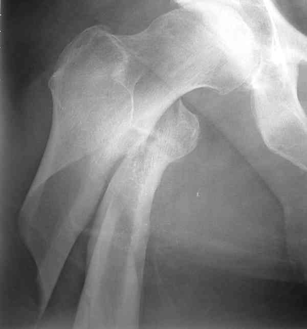
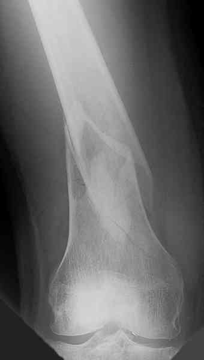
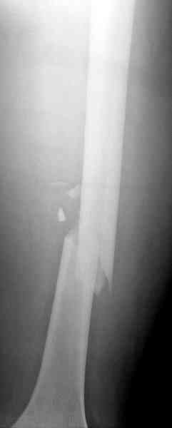
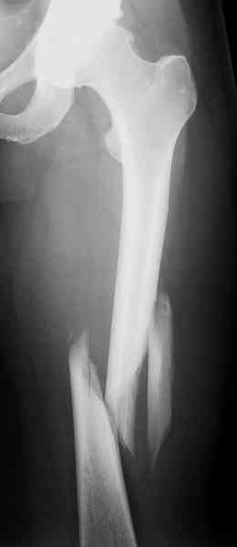
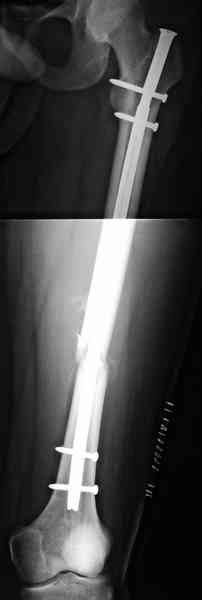
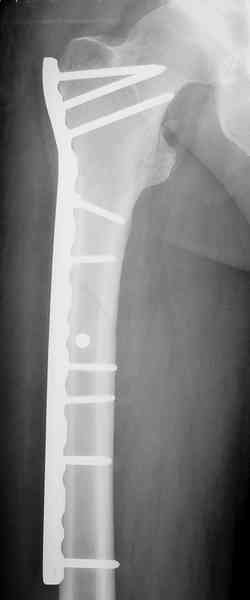
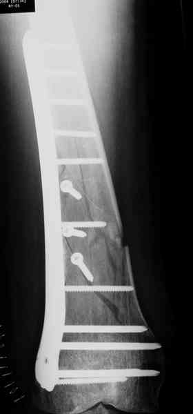
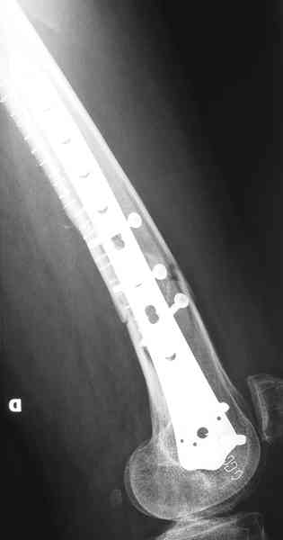

Bienvenue Sur Medical Education
Fractures : diaphyse fémorale
Spécialité : traumatologie /
Points importants
-
Les fractures sous-trochantériennes et supra-condyliennes ne font pas partie des fractures de la diaphyse fémorale
 _311 Photo Fracture sous trochantérienne
 _312 Photo Fracture supra-condylienne du fémur droit
- Fractures fréquentes
Présentation clinique / CIMU
SIGNES FONCTIONNELS
-
Douleur +++
-
Impotence fonctionnelle totale
CONTEXTE
-
Traumatisme à haute énergie avec choc direct violent (AVP) ou choc indirect associant torsion et flexion
EXAMEN CLINIQUE
Examen local
- Grosse cuisse
- Membre raccourci
-
Déformation en crosse :
- au milieu de la cuisse (fractures des 2/4 moyens)
- antéro-externe (fragment supérieur déplacé en abduction et flexion, fragment inférieur déplacé en adduction rotation externe et ascensionné = fracture sous-trochantérienne)
- fragment inférieur se déplaçant en arrière, rotation externe, saillie au-dessus de la rotule = fracture diaphysaire basse (supra-condylienne)
- Recherche de lésion cutanée (fracture ouverte)
-
Recherche de signes de lésions souvent associées aux fractures fémorales :
- fractures du cotyle
- luxation de la hanche
- ruptures du ligament croisé postérieur
- fracture de la rotule
Examen clinique complet
- S'assurer qu'il n'y a pas de lésions associées locorégionales (cutanées, vasculaires ou nerveuses) ou générales (bassin, tête, thorax, rachis, abdomen) dans le cadre d'un polytraumatisme
- Etat de choc hémorragique
EXAMENS PARACLINIQUES SIMPLES
- Hémoglobine capillaire
- Glycémie capillaire
- SpO2
Signes paracliniques
BIOLOGIE
-
Bilan préopératoire
IMAGERIE
-
Radio face + profil
Diagnostic étiologique
Diagnostic étiologique
On distingue :
- Fractures simples à 2 fragments : transversales ou obliques courtes, spiroïdes obliques longues
 _314 Photo Fracture oblique courte de la diaphyse fémorale gauche
- Fractures à 3 fragments avec 3e fragment volumineux souvent en aile de papillon
 _315 Photo Fracture de la diaphyse fémorale spiroïde oblique longue
- Fractures à 4 fragments ou plus, dites multifragmentaires
-
Fractures particulières :
- bifocales détachant un segment intermédiaire
- fracas diaphysaires irradiés aux épiphyses
- fractures sur queue de prothèse
-
fractures associées à une fracture du col du fémur
Traitement
TRAITEMENT PREHOSPITALIER/INTRAHOSPITALIER
Stabilisation initiale
- Voie veineuse de gros calibre pour lutter contre le choc et la douleur
- NaCl 0,9%
-
Traitement antalgique fonction de l'intensité douloureuse :
- titration morphinique
- Kalinox® pour réaligner le membre
- Immobilisation par traction temporaire (traction collée ou apposée, ou attelle de Donway) avant la réalisation des clichés radiologiques (rôle important des masses musculaires dans le déplacement)
- Une fois le bilan radiologique réalisé, mettre la traction trans-osseuse (clou de Steinman ou broche de Kirschner trans-tibiale) et installer le patient de préférence sur lit de Rieunau avec une traction qui doit faire 15 à 20% du poids du corps
_930
- - -
Traction transtibiale
Les fractures de la diaphyse fémorale doivent toujours être opérées, sauf contre-indication exceptionnelle :

_316
Photo
Enclouage centro-médullaire

_317
Photo
Ostéosynthèse par plaque LCP moulée sur le grand trochanter

_318
Photo
Ostéosynthèse par plaque LCP à fémur distal : incidence de face

_319
Photo
Ostéosynthèse par plaque LCP à fémur distal : incidence de profil
Auteur(s) : Jean-Jacques BANIHACHEMI, Dominique SARAGAGLIA
Surveillance
Devenir / orientation
Bibliographie